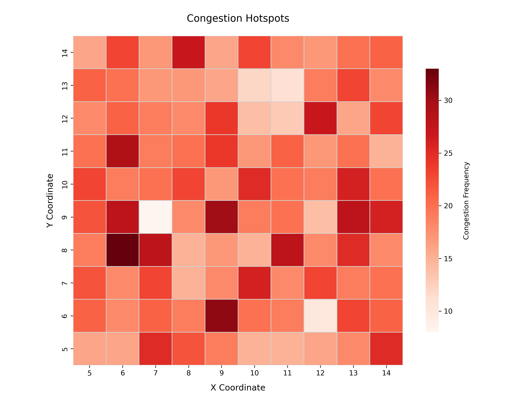
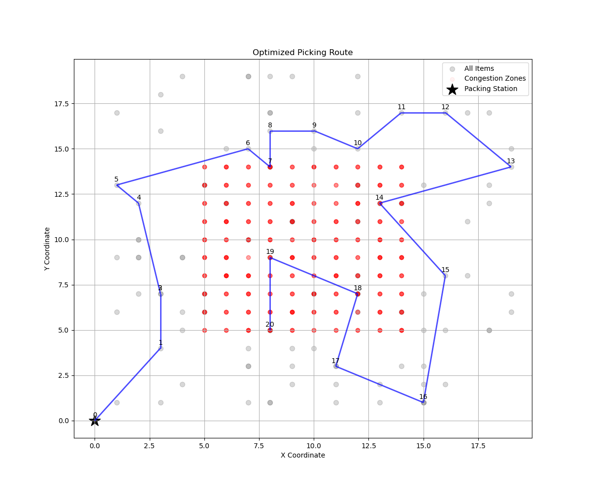

Applied Scientist Specializing in Machine Learning and Operations Research
With a PhD in Business Economics, I work as an Applied Scientist focused on operations research, optimization, machine learning, and data-driven decision-making. I bring hands-on experience in logistics, supply chain, and operational analytics, where I design and implement scalable solutions that improve efficiency and deliver measurable cost savings for businesses.
Over the years, I have built and deployed mathematical optimization models and machine learning algorithms to solve real-world problems in logistics, manufacturing, and supply chain management. My expertise spans predictive analytics, cloud computing, and automated decision systems, helping organizations make smarter data-backed decisions.
This website peeps into my professional experience, research contributions, and real-world project examples. Feel free to explore, get a sense of the kind of problems I enjoy solving, and reach out if you would like to connect or collaborate. 📩Contact Me – I would be glad to discuss how my expertise can help create meaningful impact in your organization.
View My Work Get in TouchI am an Applied Scientist with a Ph.D. in Business Economics, specializing in operations research, optimization, machine learning, and data-driven decision-making. My expertise lies in developing scalable solutions that optimize logistics, manufacturing, and supply chain operations, driving efficiency and reducing costs. With a strong foundation in mathematical modeling, cloud computing, and advanced analytics, I design intelligent systems that transform complex business challenges into actionable solutions.
My journey into operations research and optimization began with a project optimizing transportation logistics for a microchip production company. The challenge was to address the static-deterministic dial-a-ride problem, where pickup and delivery requests had to be managed efficiently along a one-dimensional geometry. I implemented a two-step approach—first clustering requests, then optimizing routing within each cluster—to minimize travel costs and improve service reliability. This experience deepened my understanding of optimization techniques in transportation systems and reinforced my ability to apply rigorous mathematical frameworks to real-world operational challenges.
More recently, I worked with a machinery manufacturing company in Belgium to optimize internal logistics. By developing a fine-grained mathematical model and integrating machine learning techniques, I enhanced decision-making for part feeding and internal transportation. The result? A 23% reduction in logistics costs and a streamlined production flow demonstrate how operations research and machine learning can drive tangible business value.
Beyond my technical expertise, I collaborate closely with stakeholders to bridge the gap between data science and business strategy. My research has been published in leading journals, and I actively share insights at international conferences. I am passionate about leveraging machine learning, cloud computing, and optimization techniques to build scalable, high-impact solutions that redefine efficiency in logistics, manufacturing, and beyond.
Explore my Projects to see examples of my work, or reach out via my Contact page—I am always open to discussing new challenges and opportunities.
Key Skills: Machine Learning, Optimization, Python, Azure, Supply Chain Analytics
At Ghent University, I built predictive analytics and optimization models that streamlined logistics flows and led to measurable cost savings. I deployed these models on Azure and High-Performance Computing (HPC) platforms to ensure they were scalable, reliable, and ready for real-world use. I also applied machine learning techniques to support smarter, data-driven decision-making.
My research-driven approach led to a 7% reduction in logistics and transportation costs, achieved through fine-grained mathematical modeling and machine learning techniques. I worked closely with stakeholders to translate business challenges into actionable insights while ensuring strict compliance with data governance policies.
Beyond technical contributions, I have been actively involved in mentorship and research, guiding teams in adopting best practices in data science, machine learning, and optimization. My work has been published in leading journals and shared at international conferences, contributing to advancements in machine learning and operations research.
At Picanol, a leading machinery manufacturing company, I focused on optimizing intralogistics flows through thorough mathematical modeling and machine learning techniques. I significantly improved part feeding and internal transportation efficiency. These efforts resulted in a 23% reduction in operational costs while enhancing material flow across the production floor.
I spearheaded the project from problem identification to solution delivery, developing tailored optimization models and data-driven strategies that streamlined decision-making. The results were presented to cross-functional teams, driving alignment and operational improvements across the board.
With a strong foundation in operations research and machine learning, my work has delivered impactful solutions across diverse industries. From tackling complex logistics problems to building scalable models that improve operational efficiency, I focus on translating technical insight into real-world business value.
Further technical insights and real-world example implementations are available in the Projects tab.
A mid-sized e-commerce warehouse is struggling to keep pace with the online demand. Fulfillment delays are increasing, customers are becoming frustrated, and inefficiencies in the picking process are starting to impact overall performance. At the heart of the problem are three main bottlenecks: Unpredictable demand surges mean viral products can suddenly spike in popularity, overwhelming current inventory systems. With an inefficient warehouse layout, high-demand items are scattered across distant shelves, forcing pickers to take longer, inefficient routes. Aisle congestion during peak hours translates to multiple pickers frequently colliding in the same zones, creating unnecessary delays. The mission is to minimize total fulfillment time, including travel and congestion delays, by making smarter, data-driven decisions. Using three months of historical order data, the goal is to predict next month's item demand patterns, reorganize high-demand items closer to packing stations, and generate optimized daily picker routes that respect constraints, such as subtour avoidance.
This project aims to minimize order fulfillment time in a mid-sized e-commerce warehouse by addressing three critical bottlenecks: unpredictable demand surges, inefficient item placement, and aisle congestion. The problem will be addressed through a two-step analytical approach: (i) data generation and demand forecasting and (ii) route optimization and result visualization.
A realistic simulation of an e-commerce warehouse environment is developed to incorporate layout, demand variability, congestion, and time-sensitive order patterns. This setup lays the foundation for meaningful demand forecasting and subsequent picker route optimization.
First, a 20x20 warehouse grid is constructed, with 100 distinct items placed randomly throughout the space. The origin point (0,0) is excluded, as it is designated as the packing station. Each item has a base demand drawn from a Poisson distribution to reflect inherent demand variability observed in real-life operations. Furthermore, each item's Euclidean distance from the packing station is computed to support future layout optimization.
items = pd.DataFrame({
'item_id': [f'item_{i:03d}' for i in range(N_ITEMS)],
'x': np.random.randint(1, WAREHOUSE_SIZE, N_ITEMS),
'y': np.random.randint(1, WAREHOUSE_SIZE, N_ITEMS),
'base_demand': np.random.poisson(lam=3, size=N_ITEMS)
})
items['distance_to_packing'] = np.sqrt((items['x'] - PACKING_STATION[0])**2 +
(items['y'] - PACKING_STATION[1])**2)
Next, over 16,000 synthetic orders is generated, spanning a period of three months. Each order is weighted by the item's base demand to reflect realistic purchasing patterns. A combination of regular and bundled purchases is included. Two types of item bundles—bundle_1 and bundle_2—are defined, each grouping together items that are frequently bought together. To simulate real operational hours, all orders are annotated with hourly timestamps.
orders = pd.DataFrame({
'order_id': np.arange(N_ORDERS),
'item_id': np.random.choice(items['item_id'], N_ORDERS,
p=items['base_demand']/items['base_demand'].sum()),
'date': np.random.choice(dates, N_ORDERS),
'bundle_id': np.random.choice(['none', 'bundle_1', 'bundle_2'], N_ORDERS, p=[0.6, 0.3, 0.1]),
'hour': np.random.choice(np.concatenate([np.arange(10,12), np.arange(14,16)]), N_ORDERS)
})
To reflect the volatility of online trends, spike behavior is introduced. On 50 randomly selected weekdays, demand for 10 viral items is intensified to simulate sudden surges in popularity. Logic is also implemented to embed bundled item behavior directly into the order stream, ensuring bundled items appear during relevant orders.
spike_days = pd.to_datetime(np.random.choice(dates[dates.dayofweek < 5], size=SPIKE_DAYS, replace=False))
bundle_items = {
'bundle_1': ['item_001', 'item_002', 'item_003'],
'bundle_2': ['item_005', 'item_010', 'item_015']
}
for bundle, items_in_bundle in bundle_items.items():
bundle_mask = orders['bundle_id'] == bundle
orders.loc[bundle_mask, 'item_id'] = np.random.choice(items_in_bundle, sum(bundle_mask))
To capture the impact of operational congestion in warehouses, 2,000 congestion events are simulated in high-traffic central aisle zones during peak order hours. This data mirrors real-world picker collisions that often disrupt and delay fulfillment activities.
congestion_zones = [(x,y) for x in range(5,15) for y in range(5,15)]
timestamps = []
for date, hour in peak_hours.index:
timestamps.append(pd.to_datetime(f"{date} {hour}:00:00"))
congestion = pd.DataFrame({
'timestamp': np.repeat(timestamps, int(np.ceil(CONGESTION_TARGET/n_peaks)))[:CONGESTION_TARGET],
'x': np.random.choice([x for x,y in congestion_zones], CONGESTION_TARGET),
'y': np.random.choice([y for x,y in congestion_zones], CONGESTION_TARGET)
})
The congestion heatmap offers a spatial visualization of frequently traversed zones within the warehouse, highlighting areas where picker traffic is most intense. Using coordinate-level aggregation, congestion frequency is computed and visualized via a heatmap where darker orange shades indicate higher picker density. This visualization assists in identifying operational bottlenecks, enabling targeted layout redesign or rerouting strategies. Constraints are applied to ensure that the heatmap respects warehouse boundary conditions, and gridlines are included to improve spatial readability.
 With data generation complete, the focus shifts to demand forecasting. A time-series modeling pipeline is constructed by engineering features such as day-of-week, lagged demand, proximity to spike days, and bundle behavior. A HistGradientBoostingRegressor, wrapped inside a MultiOutputRegressor, is trained to predict next-day demand for each item.
model = make_pipeline(
StandardScaler(),
MultiOutputRegressor(
HistGradientBoostingRegressor(
max_iter=100, max_depth=3, learning_rate=0.05, random_state=42, early_stopping=True
),
n_jobs=-1
)
)
model.fit(X_train, y_train)
Model performance is evaluated on a holdout set, producing an overall MAE of 0.94. This is considered strong, given the average daily demand of 1.77 units per item. The bundle MAE reaches 3.55, reflecting the higher unpredictability often observed in grouped product orders.
print(f"Overall MAE: {mae:.2f}")
print(f"Bundle MAE: {bundle_mae:.2f}")
Altogether, this setup captures the dynamic nature of real warehouse operations—from fluctuating demand and bundled purchases to congestion in central aisles. With the forecasting pipeline established, the next step focuses on reorganizing item placements and optimizing picker routes to minimize fulfillment delays.
To optimize picker routes within a dynamic warehouse setting, a congestion-aware routing model is developed, accompanied by a suite of visualizations that provide actionable operational insight. This stage builds upon the earlier data generation and demand forecasting step, and concludes the simulation with intelligent, cost-efficient decision support.
The warehouse is modeled as a 20x20 grid with 100 items placed at random coordinates and a fixed packing station located at (0, 0). The goal of the optimization is to determine the most efficient daily picker route, minimizing both travel distance and exposure to congestion hotspots. The problem is formulated as a Mixed Integer Linear Program (MILP), where decision variables are used to track the order in which items (nodes) are visited:
# Binary decision variables: x[i,j] = 1 if path goes from i to j
x = model.addVars(edges, vtype=GRB.BINARY, name="x")
# Continuous variables for MTZ subtour elimination
u = model.addVars(nodes, vtype=GRB.CONTINUOUS, lb=0, ub=n, name="u")
The objective combines both travel cost and congestion penalties:
model.setObjective(
gp.quicksum(
x[i, j] * (
dist_matrix[i, j] +
(10 if (coords[j] in congestion_set and coords[j] != packing_station) else 0)
)
for i, j in edges
),
GRB.MINIMIZE
)
To ensure a valid route, constraints are introduced to guarantee that each node is visited exactly once. Additionally, the Miller-Tucker-Zemlin (MTZ) approach is applied to effectively eliminate subtours within the routing solution:
for j in nodes[1:]:
model.addConstr(gp.quicksum(x[i, j] for i in nodes if i != j) == 1)
model.addConstr(gp.quicksum(x[j, k] for k in nodes if k != j) == 1)
for i in nodes[1:]:
for j in nodes[1:]:
if i != j:
model.addConstr(u[i] - u[j] + n * x[i, j] <= n - 1)
Following the solving procedure, the optimal route is decoded as:
optimized_route = extract_route(x, coords, packing_station)
The optimized picking route includes 20 selected items, which are extracted from a broader pool of warehouse stock-keeping units (SKUs). These items are not randomly chosen; rather, they represent the top 20% of items contributing to approximately 80% of the total picking frequency or value—a principle known as the Pareto Principle. This approach ensures that optimization efforts are concentrated on the most impactful items, improving the overall operational efficiency without overwhelming the solution space.
The core objective function guiding this route construction minimizes the total travel distance while accounting for congestion penalties. This dual-objective formulation ensures that pickers travel along the shortest paths possible while avoiding areas identified as congested. Congested zones, as described previously, are derived from historical data or simulation models that capture real-time picker density in specific warehouse zones. By including a penalty in the objective function for traversing these zones, the model discourages routes through such areas unless absolutely necessary, leading to smoother operations and faster fulfillment times.
Constraints are introduced to ensure feasibility of the route: each selected node (item location) is visited exactly once, and the route starts at the designated packing station. These structural rules prevent redundant loops and guarantee that every essential SKU is collected efficiently. Additionally, the route is constructed in a manner that balances proximity and congestion avoidance, ensuring that the sequence of visited nodes minimizes the total cost.
The route visualization above illustrates how these modeling choices come together in practice. The items are shown in gray, while the selected 20 items are connected sequentially to form the optimized path. Red regions represent congestion zones, and the black star indicates the packing station. The annotations reveal the order in which items are picked, offering transparency into the optimization outcome. This optimized route exemplifies how a demand-driven item selection strategy combined with a well-crafted objective function and structural routing constraints can significantly enhance intralogistics performance. The modeling framework is scalable and adaptable to changes in warehouse layout, SKU distribution, or operational policies.
This project encompasses a sequence of integrated steps designed to simulate and optimize a realistic warehouse environment. The process begins with synthetic data generation, where item layouts, demand profiles, and congestion patterns are constructed to emulate real-world operational variability. Demand forecasting follows, leveraging historical order data to predict future item requirements and inform downstream routing decisions. Route optimization is subsequently performed by solving a cost-minimizing mixed-integer linear programming (MILP) model that incorporates both travel distance and congestion penalties, thereby generating efficient and congestion-aware pick paths. Finally, result visualization is employed to translate the optimization output into intuitive, data-driven visuals that expose inefficiencies and support strategic fulfillment improvements.
The results are highly relevant for decision-makers. A large portion of fulfillment cost is driven not only by travel distance but also by avoidable congestion. These insights encourage tactical changes such as re-slotting high-demand items, adjusting picker schedules, or reconfiguring congested pathways. The visualizations provide clear, data-driven justification for these changes, making them persuasive tools for operations managers, data analysts, and continuous improvement teams.
Ultimately, this end-to-end approach offers a blueprint for building smarter, more agile warehouse systems that continuously learn and adapt to changing demand patterns and physical constraints.
The full implementation in .ipynb format can be downloaded below as a ZIP file:
📥 Download Code (ZIP)Tools: Python, Gurobi
Adenipekun, E. O., Limère, V., Schmid, N.A. (2022).
The impact of transportation optimization on assembly line feeding
, Omega - International Journal of Management Science, 102544.
Adenipekun, E. O., Limère, V., Schmid, N.A. (2024).
Part feeding and internal transportation decision making for a machinery manufacturer
, INFORMS Journal on Applied Analytics.
Adenipekun, E. O., Limère, V., Schmid, N.A. (2024).
Routing heuristics for in-house transportation in assembly systems
, IFIP International Conference on Advances in Production Management Systems, pp. 229–243. Springer.
Email: olatunde.adenipekun@gmail.com
Location: Toronto, Ontario
Feel free to reach out for collaboration or opportunities!